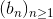
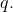
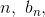
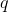
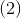
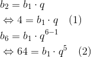
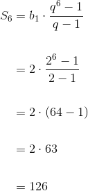

Proprietăți ale progresiei geometrice
În această pagină ți-am pregătit câteva proprietăți ale progresiilor geometrice. Vei vedea, de asemenea, și cum se aplică aceste proprietăți în exercițiile pregătite pentru tine de către profesorii noștri.
Propoziția P8: Monotonia progresiei geometrice
Fie  o progresie geometrică de raţie 
Dacă:
- 0"> şi 1,"> atunci este strict crescătoare:
- 0"> şi atunci este strict descrescătoare: b_2>\dotsc>b_{n-1}>b_n>\dotsc ;">
- şi 1,"> atunci este strict descrescătoare ;
- şi atunci este strict crescătoare.
Exemple:
- progresie strict crescătoare;
- progresie strict descrescătoare;
- progresie strict descrescătoare;
- progresie strict crescătoare;.
Propoziția P9: Formula termenului general
Fie şirul o progresie de raţie
Termenul general al unei progresii geometrice are următoarea formă:
pentru orice ( numită formula termenului general)
Demonstrație:
Arătăm că are loc formula de mai sus prin inducţie matematică:
Notăm
Etapa I: (etapa de verificare)
Pentru  , avem:
, avem:
Etapa II: (etapa de demonstrare)
Presupunem  adevărată, pentru
adevărată, pentru  și demonstrăm că
și demonstrăm că  este adevărată.
este adevărată.
Cum cele două etape sunt adevărate, ne rezultă că propoziţia este adevărată, pentru orice  număr natural.
număr natural.
Observație:
În proprietatea de mai sus, fiecare termen al şirului, începând cu cel de-al doilea, se obţine în funcţie de primul termen  al şirului şi de raţia
al şirului şi de raţia
Exemplu:
Fie şirul  cu termenul de rang unde
cu termenul de rang unde 
- Să se arate că şirul este o progresie geometrică.
- Să se calculeze primii
 termeni ai progresii.
termeni ai progresii.
Soluție:
- Pentru a arăta că șirul dat este o progresie geometrică, arătăm că raportul a doi termeni consecutivi este o constantă.
Avem:
Atunci:
Analog se arată că și așa mai departe.
Cum acest raport este egal cu o constantă, în cazul nostru  , rezultă că şirul este o progresie geometrică.
, rezultă că şirul este o progresie geometrică.
- Folosind formula termenului de rang putem calcula primii patru termeni ai progresiei geometrice:

Propoziția P10: Condiția ca trei numere să fie termeni consecutivi ai unei progresii geometrice
Şirul cu termeni nenuli este o progresie geometrică dacă şi numai dacă, începând cu cel de-al doilea termen al său, acesta se poate scrie în funcţie de termenii vecini astfel:
Altfel spus, trei numere sunt termeni consecutivi a unei progresii geometrice dacă și numai dacă cel de-al doilea număr este progresia geometrică a primului și al celui de-al treilea număr.
Demonstraţie:
Presupunem că şirul este o progresie geometrică de raţie
Scriem termenul de rang  în două moduri:
Înmulţim cele două relaţii şi obţinem:
Deci şirul este o progresie geometrică.
Exemplu:
Fie şirul de numere Arătăm că acest şir este o progresie geometrică.
Soluție:
Folosind Propoziția P10, obținem:
Așadar, am arătat că şirul dat este o progresie geometrică.
Propoziția P11: Produsul numerelor extreme
Dacă numerele sunt într-o progresie geometrică, atunci produsul oricăror două numere egal depărtate de numerele extreme este egal cu produsul numerelor extreme adică:
Demonstraţie:
Scriem termenii în funcţie de primul termen şi raţia
Ne rezultă următoarele:
![\begin{align*} b_2&=b_1\cdot q \\ b_{n-1}&=b_1\cdot q^{(n-1)-1} \\ b_{n-1}&=b_1\cdot q^{n-2} \\ b_n&=b_1\cdot q^{n-1} \\ b_k&=b_1\cdot q^{k-1} \\ b_{n-k+1}&=b_1\cdot q^{(n-k+1)-1} \\ b_1\cdot b_n&=b_\cdot b_1\cdot q^{n-1} \\ &=b_1^2\cdot q^{n-1} \\ b_2\cdot b_{n-1}&=b_1\cdot q \cdot b_1\cdot q^{n-2} \\ &=b_1^2\cdot q^{n-2+1} \\ &=b_1^2\cdot q^{n-1} \\ b_k\cdot b_{n-k+1}&=b_1\cdot q^{k-1}\cdot b_1\cdot q^{(n-k+1)-1} \\ &=b_1^2\cdot q^{k-1+n-k+1-1} \\ &=b_1^2\cdot q^{n-1} \\ \Rightarrow b_1\cdot b_n&=b_2\cdot b_{n-1}=\cdots=b_k\cdot b_{n-k+1}=b_1^2\cdot q^{n-1} \end{align*}](../../media/webbooks/455/3983/images/equations/rrqccvdujmwwb7fg-qujtw==.gif)
Propoziția P12: Suma primilor n termeni ai unei progresii geometrice
Fie şirul o progresie geometrică de raţie .
Atunci au loc următoarele două relaţii pentru suma a termeni:
- dacă rația .
- dacă

Demonstrație:
- Luăm şi obţinem:
Înmulţim relaţia  cu și avem:
cu și avem:
Din relaţia  scădem relaţia și obţinem:
- Luând , obţinem:
Atunci:
Exemplu:
Fie şirul o progresie geometrică de raţie Să se calculeze suma primilor şase termeni pentru fiecare dintre cazurile:
- și
- și
Soluție:
- Folosind Propoziția P9 și Propoziția P12, avem:
- Analog subpunctului a., obținem:

Împărţim a doua relaţie la prima şi ne rezultă că:

Acum putem afla primul termen:
Atunci, suma primilor şase termeni este:
